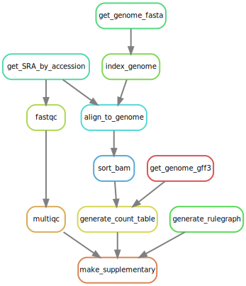

Welcome to the tutorials! Here we will learn how to make a computational research project reproducible using several different tools, described in the figure below:
The figure above gives an overview of the different parts of computational reproducibility (data, code, workflow and environment), as well as the various tools that are used for each part; Git is, arguably, integral to all of the parts, but we only listed it in the code section for a less cluttered figure.
The course has a tutorial for each of the tools, all made so that they can be completed independently of each other. It is therefore perfectly possible to go through them in whatever order you prefer, but we suggest the following order:
- Git
- Conda
- Snakemake
- Nextflow
- R Markdown
- Jupyter
- Containers
You will find the tutorials in the Modules section in the navigation menu.
Please make sure to carefully follow the pre-course setup to install the tools and download the course material before starting with any of the tutorials. These will create quite a lot of files on your computer, some of which will actually take up a bit of storage space too. In order to remove any traces of these after completing the tutorials, please refer to the Take down section.
Before going into the tutorials themselves, we first describe the case study from which the example data comes from.
The case study¶
We will be running a small bioinformatics project as a case study, and use that to exemplify the different steps of setting up a reproducible research project. To give you some context, the study background and analysis steps are briefly described below.
Background¶
The data is taken from Osmundson, Dewell, and Darst (2013), who have studied methicillin-resistant Staphylococcus aureus (MRSA). MRSA is resistant to broad spectrum beta-lactam antibiotics and lead to difficult-to-treat infections in humans. Lytic bacteriophages have been suggested as potential therapeutic agents, or as the source of novel antibiotic proteins or peptides. One such protein, gp67, was identified as a transcription-inhibiting transcription factor with an antimicrobial effect. To identify S. aureus genes repressed by gp67, the authors expressed gp67 in S. aureus cells. RNA-seq was then performed on three S. aureus strains:
- RN4220 with pRMC2 with gp67
- RN4220 with empty pRMC2
- NCTC8325-4
Analysis¶
The graph below shows the different steps of the analysis that are included in this project:

The input files are:
- RNA-seq raw data (FASTQ files) for the three strains
- S. aureus genome sequence (a FASTA file)
- S. aureus genome annotation (a GFF file)
The workflow itself will perform the following tasks:
- Downloading and indexing of the reference genome using Bowtie2
- Downloading the raw FASTQ data from the Sequence Read Archive (SRA)
- Run some quality controls on the data using FastQC and MultiQC
- Align the raw data to the genome and calculate the gene expression using featureCounts
- Produce supplementary materials using data from quality controls, gene expression and the workflow figure shown above